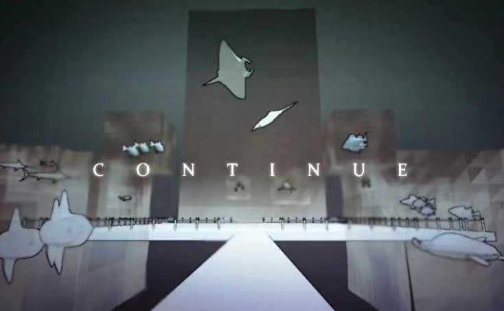

Title: TOZZI
Genre: Horror, Walking Sim
Worked on: Gameplay design, programming, level design
With: Daniel Liu, Hayley Lin, Jacob Zhai, Yuri Wang
Download: iantyf.itch.io/tozzi
TOZZI is a first-person atmospheric horror adventure where the player can only perceive the environment from inside a dice. The concept is born from the theme "roll of the dice". It was immediately obvious to us that none of us wanted to make another puzzle/strategy game, not because they're boring (although most of the time, yes), but because there're way too many out there already. Another big reason we landed on the horror theme was that none of us played much horror games, let alone made one, so naturally we had to take on the challenge.
Originally made for GMTK 2022, TOZZI was ranked 15th/6125 in Creativity.

the "under the bedsheet" section
The intention is if we situate the player inside a dice in first person and they can only see the outside through the number holes, they will need to be more aware of the surroundings since there are many blind spots. As much as it's an interesting concept, it also poses quite a few difficult design challenges.
The one we spent the most time on was that the player simply, well, can't see. The balance between claustrophobic feeling and navigation was a constant challenge we battled throughout the design process. On one hand it was crucial to immerse the player in darkness and a sense of danger, on the other hand it's also meant to be a walking simulator that has a goal to reach. We iterated on the level many, many times based on playtest data to make the level easier to navigate, with intentional lighting and more guided prop placements. The end result is nowhere near perfect, but the learnings were immense.
In retrospect, we should have been more careful with the use of verticality in our levels, due to the huge emphasis on a sense of scale. When the player is already quite tiny in relation to the environment (i.e a dice in a room) and can't see well, even the most basic platforming like "getting up there" or "crossing this bridge" is inherently quite challenging.


Title: The Second Hand
Genre: Puzzle
Worked on: Lead Programming, Mechanics Design, Level Design
Worked with: Cameron Gonzalez, Lorg An, Tassneen Bashir
Download: iantyf.itch.io/thesecondhand
The second hand is a puzzle adventure game where the player tries to rewrite a story through manipulating time. The player plays as the spirit of the former owner of this antique clock shop, and gets to possess all the clocks in the shop and manipulate both the display time on each clock and the actual time in the world. The player gets to experience the story through multiple angles from different clocks, and use his limited abilities on the clocks to affect how the story unfolds.

rewind mechanic
The puzzle element in the game is intended to be light, so that the player may choose to only be a spectator and leave the story as is. It also means that the puzzling shouldn't be punishing at all - the player should be able to freely revisit past dialogues, try different actions, without having to load a save point or restart the game.
Therefore, the game features a special rewind/fastforward system, which allows the player to go back and forward in time whenever and however much they want. It is implemented through an event-based system with a tree structure, that keeps track of all the decisions made and animations that has been triggered so far. When the player chooses to rewind, it backtracks and plays all animations in reverse order with a negative speed. This minimizes data storage and ensures perfect rewinding that can be triggered and stopped at any point.

opening narrative

Title: Continue
Genre: Walking Simulator
Worked on: Level Design, Technical Art
Worked with: Daniel Liu, Hayley Lin
Download: daniel67liu.itch.io/continue
Continue is a walking simulator that explores the feeling of moving on. Player traverses through three distinct memories along with the beautiful background music from Someday or One Day, which also represents the progression of the game. If the player still lingers around when the music stops, the world collapses and they wake up in their dream again.

cafe

aquarium

Title: Self-Service Graveyard
Genre: Walking Simulator, Online-Multiplayer
Worked On: Everything but music
With: me
A networked graveyard game where you walk, sometimes alongside others, silently, read notes, and when ready, die and leave a grave with your own notes.
This is more of a retro, since it's one of those games where the emergent behaviors just completely overwhelmed my intentions, and I've spent a lot of time thinking about them... Initially, under the prompt "cement", I wanted to create a shared graveyard experience where players silently and anonymously walk alongside each other and, when they're ready, press space to die and leave a message on their grave. Other players will then be able to read them, and because it takes time to travel back to where they died, they'll be more careful and thoughtful with the messages they leave.
But that's totally not how the game is being played. In fact, players are interacting with it in much, much more expressive, heartwarming, and heartbreaking ways.
Because of the asynchronous nature of the graveyard, it has become a social place where players write messages - not always for each other, some for themselves - and leave. it's become a place where they make jokes, say hellos, complain about life, and more. it exists in a weird middleground between saying what they normally wouldn't say, and writing what they normally wouldn't write online. it might be due to the anonymity, or the dying theme, or just the fact that it's a videogame.
Reading the messages people leave has now become part of my daily routine. it's my version of twitter, but even more depressing, since they actually mean what they say, or at least it appears so. i'm happy for the person who said "things are finally going well", feel for those who're going through depression, and glad to see an lgbtqia+ corner taking form.
But it's also a weird feeling because I didn't mean to provide this safe space. i'm seeing people that need help but i can't help them; i'm hearing voices that should be heard by more but they're not; i want to know who they are, but i can't and maybe shouldn't. It's such a weird feeling to be behind all of this.
Something fun that is worth mentioning is since i didn't want a border for the yard, players are allowed to walk into the darkness. It was expected that players might try to find peace in a quieter, less crowded place, but it has sort of turned into a mysterious mission thing where some would hide messages and leave hints for others to find. probably one of the more interesting and evocative gameplay that happened.
I love google sheets.
Prototyping networking games is always a headache, but this time I found something that worked surprisingly well, and has been used in some other games by my friends.
Essentially it's using google sheets as a database and server, and web requests from unity to read and write data to the sheet. by "server" it means we can put formulas that parse and organize the data sent to it and store them in separate sheets to make them easier to retrieve. The only caveat is I had to use google form for writing data which gets sent to a spreadsheet anyways, because of an api update google did earlier.
Mine currently has over 40000 rows and still not lagging.
You can read more about it here.
Title: 781
Genre: Visual Novel
Link: iantyf.itch.io/781
This week's prompt was "Non-human Perspective". The class I TAed for was doing their Visual Novel assignment so I thought I'd do one myself too. The perspective I chose is from the 'computer', more specifically a compiler. It was very weird trying to think from a compiler's pov and imagine what their world feels like, and then situate the player, who can't think as rigorious as a machine, in its place.
I think towards the end I got to something interesting. Definitely one to revisit in the future.